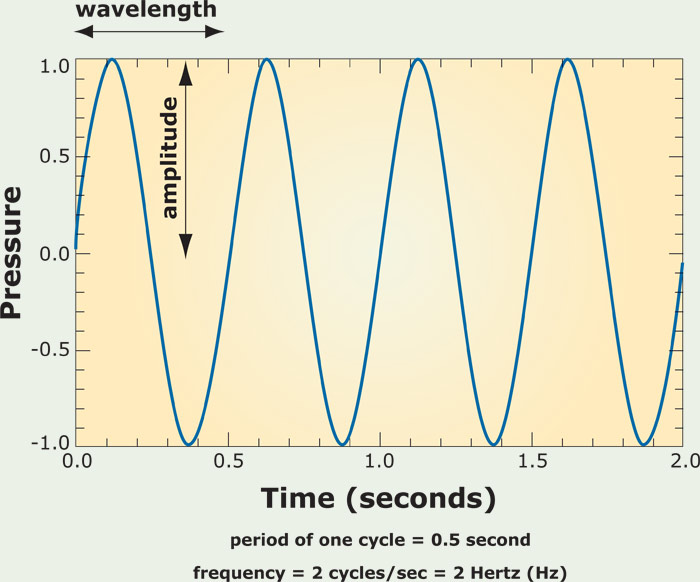
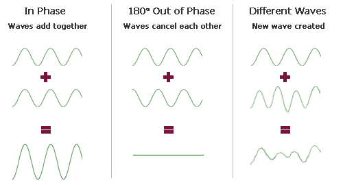
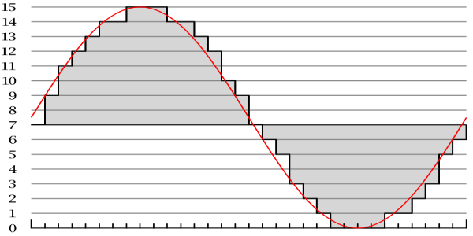
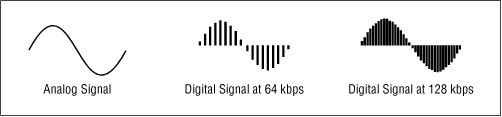
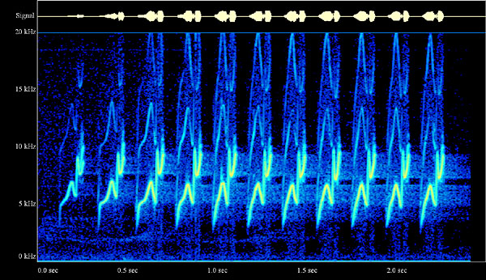
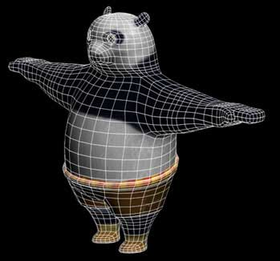
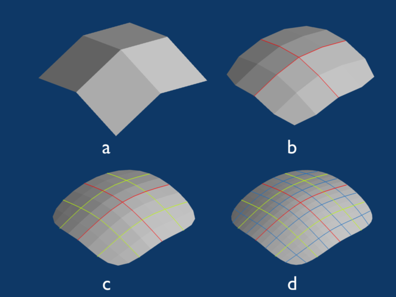
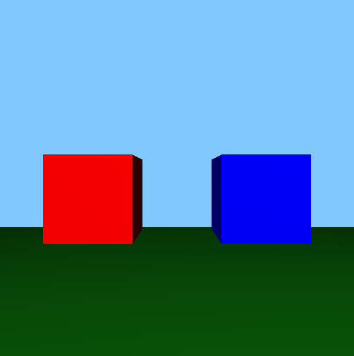
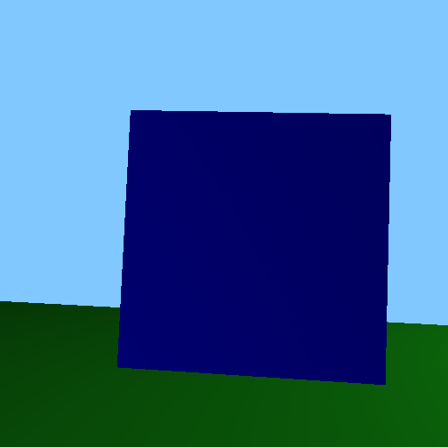

Chapter 13 A/V Club
Graphics sure are nice, but my computer spends a whole lot of time playing Ke$ha songs. First, we'll take a look at what makes sounds on your computer TiK ToK (I could make Ke$ha puns all day, but I'll spare you from more). Then, we'll build on what we saw last time when we looked at 2D graphics and discuss how 3D worlds are created on your computer. Finally, we'll take a look at how graphics and audio combine to bring us the magic of the cinema!
Sound Fundamentals
Before we start talking about how sound in your computer works, let's quickly review how sound in the real world works! Haven't you started to miss your physics classes in high school by now? Recall that sound is just a wave of oscillating pressure that travels through some medium like air or water. So, we can model sound with a wave that looks something like this:

Here, we have time along the x-axis and pressure along the y-axis. Now, there are two different knobs we can turn to change what this wave looks like. First, we have amplitude, or the distance along the y-axis between 0 pressure and some point on the wave. This determines the volume, or loudness, of the sound, which we typically measure in decibels. As you can see above, sound waves can have peaks of high pressure as well as valleys of low pressure. The other knob we can turn to change what this wave looks like is its wavelength, or the distance along the x-axis between adjacent peaks or adjacent valleys, which determines the pitch of the sound. Usually, we talk about frequency instead, which is simply the inverse of wavelength. A higher frequency means that we can fit more peaks into some time interval, which produces a higher-pitched sound. A lower frequency, on the other hand, means that we can't fit as many peaks into the same time interval, which produces a sound with a lower pitch. We measure frequency in Hertz (Hz), more frequently seen as kHz or MHz. We've actually already seen this unit before! Remember where? I'll give you some time to process that one...
Though you may have earbuds in your ears as you're walking down the street, you probably still hear lots of sounds at once. When two sound waves collide, we get something called wave interference, which is simply the process of adding two waves together. In this process, adding two peaks will create a larger peak, adding two valleys will produce a larger valley, and adding a peak and a valley (of the same size) will produce a flat line, since they'll cancel out. So, adding a big peak with a small valley will result in a smaller peak, and so on. If the peaks and valleys of two waves line up, then we can say those two waves are in phase, and if not, then we'd say they're out of phase. The below summarizes the interactions of waves with different phase relationships:

Digital Sound
We can model sound as a continuous, analog wave, but we're going to need something that looks a lot more digital (aka 0s and 1s) if our computers are going to be able to play Ke$ha tracks. Curves like the above have a value defined at every single point on the x-axis, which means they define values for an infinite number of points! Think back to high school algebra: if you have an equation like y = x + 1, you can plug in x = 0.1, x = 0.01, x = 0.0001, and so on, and you'll always get a value for y. Sadly, I don't have any hard drives with infinite capacities, so it looks like we can't save the value of every single point on that curve. What we can do, though, is take discrete samples from a continuous sound wave, which means we'll only save some of the values on the curve. Turning a continuous curve into discrete values looks something like this:

Here, each gray bar represents a sample from the curve, which is simply a number that we can save. As you can see, the shape of the gray bars roughly traces out the shape of the red curve, so sampling can give us a pretty good approximation of that curve. Now that we've taken samples, we simply have a bunch of numbers associated with particular times, which is something we can represent with 0s and 1s! In the above picture, we've taken 30 samples or so. However, if we doubled the number of samples, we'd end up getting a much better approximation of the continuous curve. Think back to image resolution: if we had more boxes in the grid to work with, we could capture more of an image's detail. The number of samples we take from the curve is called the sampling rate, where a higher sampling rate indicates a higher sound quality. CD-quality audio has a sampling rate of 44,100 samples per second, or 44.1 kHz. Rates as high as 96 kHz can be found in professional recording applications. Check out the below for a comparison of two different sampling rates, where we can see that taking more samples produces a shape that more closely resembles the original analog curve.

But, where does the value from each sample come from? Is a value of 10 loud, or is a value of 1,000,000 loud? This question is essentially the same question we asked ourselves when we looked at the value of an individual pixel in an image. The answer, we found out, depended on the image's color depth, which essentially defined a range of numbers that an individual pixel could take on. In audio land, the range of values for a sample, or equivalently, the number of bits used to represent each sample, is called the bitrate. CDs have 16-bit audio, which means that CD quality samples take on values between 0 and 65,536 (which is 216). 24-bit audio isn't uncommon in professional recording software.
MP3 Files
You're probably already familiar with one way to store an audio file: MP3, short for MPEG-2 Audio Layer III (that's a mouthful). MP3 uses lossy compression to create songs that are much smaller than the songs on a CD while doing its best to preserve audio quality. Since we know the sampling rate and the bitrate for CD-quality (also known as PCM) audio, we can calculate how much space a 3 minute song takes up. We're taking 44,100 samples per second, and each of those samples is 16 bits long. But, we're going to need separate samples for the left and right audio channels, so we're looking at about 0.2 MB for each second of audio. So, for 3 minutes of audio, we're looking at 30+ MB! An MP3, on the other hand, compresses that down to about 3MB with its lossy compression, which means we can store about 10x as many songs on our iPods when compared to CDs.
So, how does the magic happen? MP3 compression uses something called psychoacoustics, which is one of the fanciest words I've ever seen, to take advantage of a few limitations in both the biology and psychology of our perception of sound. First, the human ear isn't capable of hearing any sounds that are below 20 Hz or above 20 kHz, and if you've attended a few concerts in your day, then you're looking at an even smaller window (around 16 kHz). It's also difficult for us to tell the difference between two sounds that are very similar (i.e., having similar frequencies), and we're at our best only between frequencies of about 2 kHz and 5 kHz. So, when encoding a sound as an MP3, there's no point storing any sounds that we won't be able to hear when we play it back, and we can combine sounds that we wouldn't be able to differentiate! In addition to these limitations with the ear itself, our psychological perception of sound is also limited by phenomena like frequency masking; if we hear a pair of sounds with similar frequencies at the same time, then the higher frequency will "mask" the lower frequency, which means that we won't hear it. Similarly, if a loud sound and a quiet sound are played at nearly the same time, then the loud sound will mask the quiet sound. In a complex sound like a pop song, this will happen pretty frequently, so we have lots of opportunities to save space by throwing away any frequencies that will be masked!
In order to determine which data from the PCM encoding can be thrown away, your computer uses two different tools. This process is pretty complicated, so we'll just give a simplified, high-level overview here, but if you're interested in reading more about the specifics, then check out this article. The first of these tools is called the Fast Fourier Transform, or FFT for short, which is a mathematical black box that determines where masking and dramatic changes in the audio occur. The other is called the Modified Discrete Cosine Transform, or MDCT for short, which analyzes the entire spectrum of frequencies of the audio. The result of this process is a cool-looking visualization called a spectrogram, which is essentially a fingerprint of the sound's frequencies. In the spectrogram below, we have time along the x-axis, frequency along the y-axis, and the energy (or intensity) of the frequency is represented with color.

Cool, huh? An MP3 file itself is divided into many frames, each of which spans fractions of a second of audio. Each frame contains a header for metadata followed by the actual audio data. MP3 files also have space for ID3 tags, which are special pieces of metadata used to describe the artist, album, and other fun facts about the song to the MP3 file.
Other Audio Formats
Just like we could choose to represent an image as a BMP, JPEG, GIF, etc., we also have a variety of different formats for sound files. For example, the next generation of the MP3 format is AAC, or advanced audio coding. This format was originally developed by Apple for use in the iTunes music player, but it has since seen widespread adoption among a variety of devices. AAC is a bit more efficient than MP3 in terms of compression and quality. WMA, or Windows Media Audio, is a proprietary format developed by Microsoft that hasn't become nearly as popular as AAC or MP3. WAV is another audio format originally developed by Microsoft. Unlike AAC, MP3, and WMA, WAV files are typically not compressed, so they hold all of the original PCM audio data. Many of your PCs system sounds, like bells and alerts, will be encoded as WAV files.
3D Graphics
Before we move on to video, let's take a brief detour to discuss 3D graphics, since everything we looked at last time was in boring old 2D. Now, we'd like to be able to represent scenes where objects are placed in a three-dimensional world. We can represent 3D objects using wireframes, which are models that define the edges of 3D objects. First, we can specify the locations of important points on the object in 3D space, and then we can specify which of those points are connected by lines or curves. For example, we might model a 3D book as a cube; each of the book's corners is a point on the wireframe, and lines connecting the corners can define the surface of the book. Remember, the goal of the wireframe is simply to describe the shape of the 3D object by defining its edges, so we're not concerned about things like book's color yet. So, a wireframe looks something like this:

For more complex 3D objects, we probably need a more complicated collection of polygons to accurately describe the shape of an object. This collection of polygons, which typically consists of triangles or quadrilaterals (often called simply "quads"), is called a mesh. So, a mesh is simply a type of wireframe where each component is a polygon, which means we can only connect points with straight lines (while the above uses curves for some connections). A triangle mesh that describes the shape of a dolphin might look something like this:

As we saw earlier with bitmaps, it's tough to represent curves when we only have polygons to work with. In order to create smoother-looking curves, we essentially needed a higher resolution, which in the case of our 3D model, means more polygons. However, that means we have to store all of those polygons, which means our mesh files are going to start to blow up in size. Using a technique called subdivision surfaces, though, we can actually define smooth, curved surfaces using a small number of polygons. If you head here, you can see an example of subdivision surfaces in action. Below, we have a mesh that looks something like a diamond ring, but it isn't going to win an Academy Award for visual effects.
Now, let's subdivide the polygons of this mesh, which will give us a larger number of smaller polygons. For example, we can add a new point to the center of each polygon and then connect those points to the midpoints of existing edges. Each time we do this, our mesh will get progressively smoother:

After applying this process just three times to the diamond mesh above, we get something that looks like this:
Now that looks much more like a diamond ring. So, we were able to create a nice, smooth surface from a pretty limited mesh that at first didn't look smooth at all! There are actually a few different methods for subdividing surfaces, and the one we just looked at is named after Catmull-Clark.
Now, we can create three-dimensional scenes by placing these objects out in 3D space. Here's what a 3D scene might look like:

This particular scene was created using a 3D programming framework called OpenGL. We can see two 3D cubes, as well as a green ground and a blue sky. To create a cube, we defined the positions of its vertices in the scene using x, y, and z coordinates. Then, we specified which vertices were connected by breaking each face of the cube into two triangles that meet to form the diagonal of the cube. For performance reasons, triangles are often used as the polygons that form a polygon mesh, and because the two triangles on each face are touching, we don't see any kind of "seam" in our cube. Finally, we specified a color for the surface of the cube, which was effectively painted over our triangle mesh in order to create a solid-looking object.
When we look at a 3D scene, though, we're really only seeing a single, two-dimensional snapshot that represents our view of the scene. So, depending on our perspective, we may not need to draw all of the data for all of the objects in the world. Let's say I move around in the above scene, so my perspective now looks something like this:

Now, the camera is on the red cube, and I'm looking at the blue cube. From my previous viewpoint, I could see both cubes, but now, I'm only able to see one cube. So, it would be a waste of time for the computer to try to draw the red cube, since there's no way I can see it anyway. Using some fancy linear algebra, your computer can determine which objects will not be visible in the scene and then skip over them in the drawing process, which is called clipping. Similarly, I can really only see the front of the blue cube from this angle. So, even though we've defined triangles that make up the faces of the other sides of the cube, it's also useless to draw those, since I can't see them. This process is called culling, and it simply involves figuring out which objects are obstructed from view in the scene. Both clipping and culling can dramatically improve the performance of a graphics application. It's expensive to have to draw all of those polygons at once, so your computer wants to draw as few as it possibly can so it can handle complex scenes!
Video
Now that we've seen how graphics and audio work, let's take a look at the combination of the two: video! When dealing with video on your computer, we're concerned with two different things: codecs and containers. We saw that PCM audio can take up a lot of space, but uncompressed video is even larger. Without any compression, an hour of high quality video can be hundreds of gigabytes large! If we ever want to distribute videos, then we're really going to need a way of compressing things to a reasonable size! The role of the codec is to do just that, as the codec (a combination of the words "encode" and "decode") is a program responsible for compressing and decompressing video. Today, the most popular standard for compressing videos is called H.264, sometimes referred to as AVC, or advanced video coding. For example, all Blu-Ray players must be able to decode video that has been encoded according to the H.264 standard. There are lots of codecs out on the Internet that compress video using H.264, including x264 and DivX. There's a good chance your operating system already includes a number of codecs for popular video formats, so you probably won't need to download a "codec pack" from a random site on the Internet. Software applications like the VLC Media Player also have a variety of codecs already built-in, so if you're ever sent a video that your computer can't play, trying another media player is your best bet!
Now that we have a codec that can compress and decompress video, we want to package it up with some other data into a container. As its name suggests, a container is essentially a bundle of files that includes video and audio tracks, as well as captions or DVD menus in some cases. Popular video containers today include AVI, MKV, MP4, and MOV, and different container formats support different codecs for audio and video. Containers give us a bit of flexibility in creating videos, since we get to choose which codec we want to use for the video and which codec we want to use for the audio, though not all containers support all codecs. However, because codecs and containers are separate concepts, it could be the case that your media player supports a certain container format but not the codec used for the video in the container, which means you won't be able to play the video!
Video Compression
Exactly how a video gets compressed depends on the particular codec being used, but let's take a look at some high-level ideas. When we looked at lossless compression for images, the basic idea was that compressed images avoided storing redundant data for similar pixels. Now, we can apply the same exact principle to videos! In a movie or television show, it's usually the case that the entire scene isn't changing all at once. Instead, there's usually some subject in the video that's moving on a more static background. So, if nothing in the background is changing between frames, then we don't need to redundantly store that data! Let's consider the following three frames of a video:
In this short clip, we have some movement towards the right of the scene, but the chair at the left or the ground it's sitting on never actually changes. So, there's no need to save the data for all of those unchanging pixels, just like we didn't need to save the data for every single black pixel in the German flag. That means we can actually save something that looks more like this:
We can see this in action in the below video clip. Notice how the chairs in this scene are totally static throughout the video, and you can notice a very slight difference between the appearance of the chairs and the characters, since the same representation of the static object can be re-used from frame to frame.
Streaming
Services like YouTube and Hulu have popularized the idea of video streaming, which is commonly used to view videos online. If we head to YouTube and pull up a random video, then it will start playing within a few seconds. Given how large those video files are, there's no way the whole thing could have downloaded that quickly! Streaming gives us the ability to watch a video (or listen to an audio track) as it's being downloaded, so I can start enjoying a cat video even before the whole file is downloaded to my computer.
When you load up a YouTube video in a browser, the video file will be downloaded by the browser in small chunks (think less than 10 seconds of video). So that the video remains smooth as you're watching it, your browser actually needs to make sure it stays a bit ahead of you as the viewer. If you're at minute 3 in a video, then the data for minute 4 will hopefully be downloading into a buffer, so you won't have to wait for anything once you reach the fourth minute of the video (at which point, your browser has ideally moved on to minute 5). However, if your browser can't keep up, perhaps due to slowness in your Internet connection or on the server from which the video is being downloaded, then the streamed video will pause, and you'll probably see an error message related to "buffering!"
Of course, YouTube wants to display that message to you as infrequently as it possibly can, since paused videos make everyone sad. So, it's probably not the best idea to try to send a huge video file to a client on a slow Internet connection. Instead, the client could download a video of a much lower resolution. Video resolution, just like the image resolution we looked at in the last section, describes how much information has been encoded into the frames of a video. Common video resolutions are 1920x1080, 1280x720, and 854x480. These are commonly abbreviated to shorter names like 1080p, 720p, and 480p, where those numbers refer to the height of the video. Notice that in all three cases, the ratio between width and height is 16:9, which is known as the image's aspect ratio. This widescreen aspect ratio is popular among high-definition videos today. On the other hand, some lower resolutions (like 640x480), may use an aspect ratio of 4:3.
So, to ensure that people on slower Internet connections can view cat videos without delay, YouTube or other video services may actually produce a few different versions of the same video, each with a different resolution. That way, anyone with a fast connection can view the high-definition 1080p cat in all of its glory, while those on a slower Internet connection can instead choose a 480p video that won't have the same quality, but will download much faster. However, maybe casual YouTube users aren't as savvy as you and have no idea which resolution they should choose, or maybe your Internet connection slows down midway through a video. Adaptive bitrate streaming, in which a server chooses which resolution video is best for clients on the fly, is one solution to problems like these. While watching a movie on a service like Netflix, you may sometimes notice a sudden change in the picture's quality, whether it be a big increase or decrease. There's a good chance that's because the server decided it would be best to start sending you a different resolution video!
GPUs
Back in our hardware section, we briefly mentioned the role of the graphics card in drawing things to the screen. One component of the video card is the GPU, or Graphics Processing Unit, which is essentially a CPU dedicated just to graphics-related computations. On modern computers, these things are seriously powerful. We saw earlier how parallelism can lead to more efficient solutions to computing problems. GPUs take parallelism to a whole new level by running thousands of computations at the same time. Typically, each of these computations is relatively small, so each doesn't require a ton of processing power to complete. It also helps if these problems are independent of one another, so everything can be solved at the same time with minimal need to combine everything back together. Luckily, both of these conditions are really common in graphics! For example, we may need to draw many polygons in a scene at once, and drawing a cube on the left side of the screen is totally independent from drawing a cube on the right side of the screen. Similarly, figuring out the color of the pixel in the top-left of your screen doesn't depend on figuring out the color of the pixel in teh bottom-right of your screen! Mythbusters explains it best with the following clip:
The result of this massively parallel computing model is huge gains in efficiency. Below is a comparison of a CPU and a GPU rendering the exact same scene:
That's it for multimedia for now. I'm in the mood for some more Spongebob Squarepants, so I'm gonna take a cartoon break. I recommend you do the same. Next up: security!
Practice Problems
How do amplitude and frequency affect sound?
Describe the process of converting from analog sound to digital. How do both sampling rate and bitrate come into play in this process, and what's the difference between the two?
I have an audiophile friend who just spent another $100 on a new hard drive because he refuses to listen to anything but PCM audio. He says he can always tell the difference between PCM and MP3. Even though MP3 files are a fraction of the size of their CD-quality equivalents, why might my friend be going a bit overboard?
What's a wireframe? Describe how we use wireframes to represent objects in 3D space.
Homer went to download a mesh of a doughnut, but the file he downloaded looks more like a box. D'oh! Lisa says that he shouldn't worry, though, because the mesh he downloaded will work just fine. Why?
What's the difference between a container and a codec? Give an example of each.